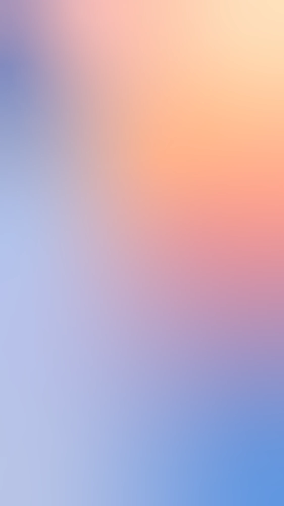

Geometría y espacio
Las reglas invisibles que ordenan cada pieza:
esquinas, radios, espacio y retícula.
Exterior recto, interior curvo
La geometría de Keyons distingue entre contenedores independientes y conjuntos visuales.
Un contenedor aislado utiliza esquinas rectas como tratamiento base. Cuando varios elementos forman un conjunto reconocible, pueden combinarse esquinas exteriores rectas e interiores curvas para expresar su relación.
En un conjunto horizontal, las esquinas exteriores son rectas y las interiores pueden curvarse cuando refuerzan la agrupación.
Se aplica el mismo principio en vertical, respetando los límites exteriores del conjunto.
La combinación de esquinas responde a la organización visual. No todas las cuadrículas requieren curvas interiores.
Las cuatro esquinas permanecen rectas cuando el elemento se presenta de forma independiente.
Los botones mantienen una geometría curva, diferenciada de los contenedores. Las variantes, estados y transiciones funcionales se especifican en el Sistema de Diseño.
Los badges se rigen por su función y variante documentada, sin asumir automáticamente una geometría universal para todas las etiquetas.
El radio responde a la función
Los radios se seleccionan según la función del elemento, su tamaño y su relación con otros componentes.
El tamaño puede orientar la elección, pero no determina automáticamente que una superficie grande deba tener esquinas más redondeadas.
Menos de 24 px
(Se usa en)Barras de datos, chips internos, marcas pequeñas
24 a 64 px
(Se usa en)Campos, fichas de color, segmentos
64 a 200 px
(Se usa en)Tarjetas y recuadros de contenido
200 a 400 px
(Se usa en)Paneles y tarjetas grandes
Más de 400 px
(Se usa en)Secciones y bloques de página
Cuando un contenedor curvo contiene otro elemento, los radios y el espacio interior deben mantener una relación visual coherente, evitando encuentros irregulares.
La fórmula del radio exterior menos el relleno puede utilizarse como referencia geométrica, pero debe comprobarse visualmente y no aplicarse de manera automática en todos los casos.
Siempre con su variable: var(--r-card), nunca con un número suelto.
La geometría Keyons, no un radio para todo
La geometría de los elementos debe responder a su función y relación compositiva. No aplicar el mismo radio a botones, campos, imágenes y contenedores únicamente por uniformidad. En las composiciones de Keyons se aplica el principio de contenedores individuales rectos y agrupaciones con combinaciones justificadas de esquinas rectas y curvas.

El mismo radio en todo Imagen, contenedor y botón con idéntico redondeo.
La imagen y el texto forman un conjunto: exterior recto, interior curvo. El botón conserva su geometría curva.
Todo se mide en múltiplos de 4
La escala de espaciado utiliza incrementos de 4 px para organizar márgenes, separaciones y rellenos de forma consistente.
Sus valores son referencias para construir relaciones espaciales claras. La escala no sustituye las necesidades específicas de tipografía, bordes, adaptación responsive o representación gráfica.
Las separaciones se eligen según la relación entre los elementos y la densidad necesaria. No es obligatorio utilizar grandes espacios en todos los contextos ni comprimir una composición para mostrar más información.
Cuando la escala no resuelva una necesidad técnica justificada, la excepción debe documentarse en el sistema correspondiente.